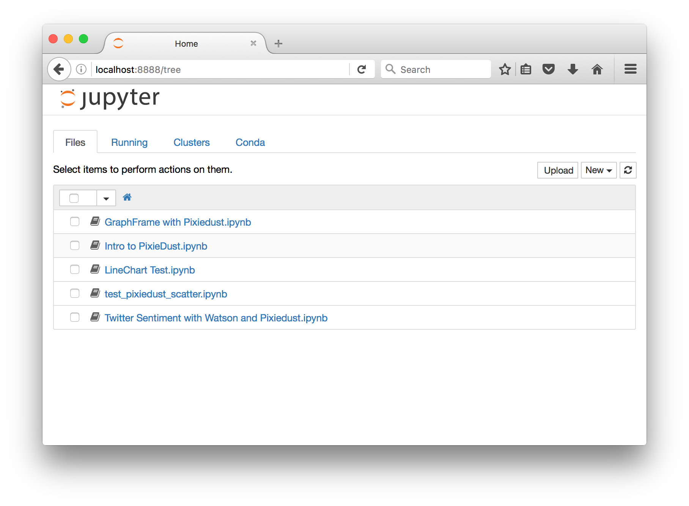
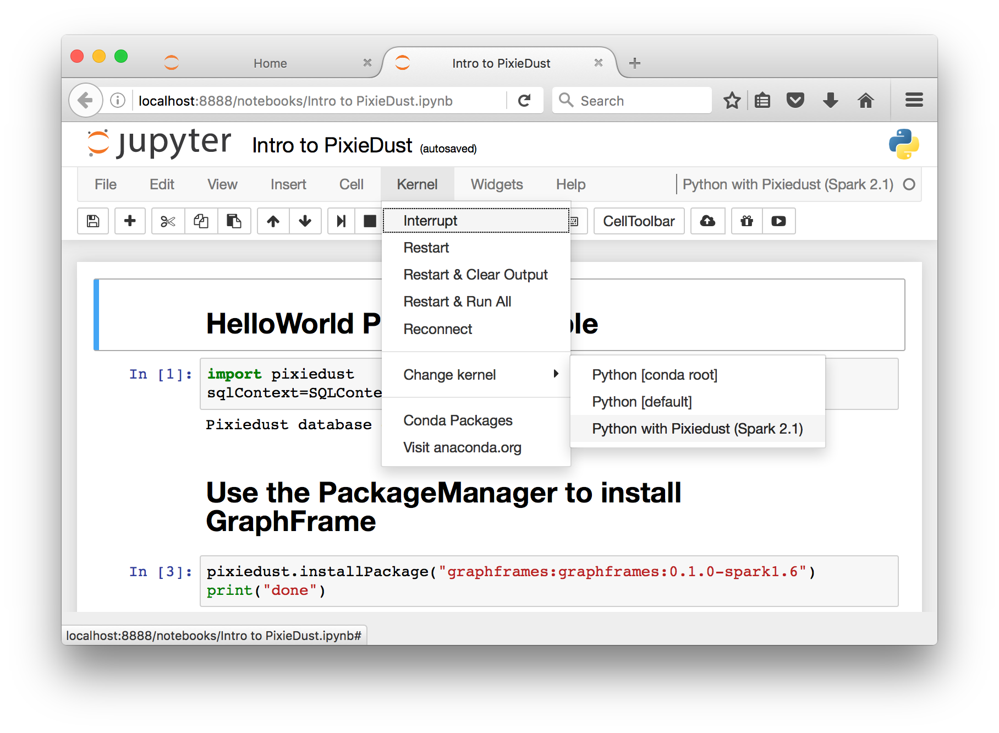

Install PixieDust¶
PixieDust is a Python library for use in Jupyter notebooks. To use PixieDust in your local environment, you must install it. PixieDust is bundled as a Python package and can be installed using pip. To install and configure PixieDust complete the following steps:
System Requirements¶
To join development or use pixiedust locally, you should:
- work on a computer running Mac OS. Commands and programs may not all run as expected on a Microsoft Windows machine.
- have the latest version of Java, which is 1.8. To check, open Terminal or other command-line interface and run the command java -version. If you need to, update your JDK at [Oracle Java Downloads](http://www.oracle.com/technetwork/java/javase/downloads/index-jsp-138363.html#javasejdk).
Install Anaconda¶
In order to use PixieDust inside your Jupyter notebooks you will, of course, need Jupyter. The easiest way to install Jupyter is by installing Anaconda. Anaconda is a Data Science platform which consists of a Python distribution and collection of open source packages well-suited for scientific computing. Anaconda includes Python, pip, pandas, numpy, matpoltlib, and other libraries required to run PixieDust effectively.
To install Anaconda go to https://www.continuum.io/downloads and follow the instructions.
Note
PixieDust supports both Python 2.7 and Python 3.5.
Install PixieDust¶
Once you’ve installed Anaconda run the following commands in your Terminal or command-line interface to ensure your environment is configured properly:
pip --version
jupyter --version
You can install the PixieDust library from source or from PyPI. If you plan on contributing to PixieDust we recommended that you install from source.
Install from Source
To install PixieDust from source, first clone the PixieDust repo on GitHub:
git clone https://github.com/ibm-cds-labs/pixiedust
Next, run pip with the -e flag to install the PixieDust from the local directory:
pip install -e ./pixiedust
Install from PyPI
Alternatively, you can install the last version of PixieDust from PyPI using pip:
pip install pixiedust
Note
Do not include --user in your pip install command. Doing so installs the Jupyter PixieDust command in the wrong directory, and you won’t be able to follow the rest of the steps on this page.
Jupyter Kernels¶
In order to use PixieDust inside Jupyter you must install a new Jupyter kernel. Kernels are processes that run interactive code from your Jupyter notebook. PixieDust uses pyspark; a Python binding for Apache Spark. PixieDust includes a command-line utility for installing new kernels that use pyspark. The command-line utility walks you through the steps of configuring your kernel as well as installing Apache Spark and Scala (required if you want to run Scala code from within your Python notebook).
Install a Jupyter Kernel¶
From a Terminal or command-line interface run the following:
jupyter pixiedust install
The install will first ask you to set a path for PIXIEDUST_HOME. This is a directory that PixieDust will use to keep track of your PixieDust install, including any libraries you install from PixieDust. You may choose to keep the default path, or select a new one:
Step 1: PIXIEDUST_HOME: /Users/USERNAME/pixiedust
Keep y/n [y]? y
After you have configured PIXIEDUST_HOME you are prompted to specify the location of your Apache Spark install. If you do not have Apache Spark installed, the installer downloads it for you:
Step 2: Please enter a SPARK_HOME location: /Users/USERNAME/spark
Directory /Users/USERNAME/spark does not contain a valid SPARK install
Download Spark y/n [y]? y
If you choose to download Apache Spark, the installer prompts you for the version. Download it, and configure your SPARK_HOME accordingly:
What version would you like to download? 1.6.3, 2.0.2, 2.1.0 [2.1.0]: 2.1.0
SPARK_HOME will be set to /Users/USERNAME/spark/spark-2.1.0-bin-hadoop2.7
Downloading Spark 2.1.0
Extracting Spark 2.1.0 to /Users/USERNAME/spark
Tip: If you’re using Spark 1.6, and you want to work with PixieDust’s sample data (recommended!), manually add the following package when you run your notebook. (You need run these commands only once.):
pixiedust.installPackage("com.databricks:spark-csv_2.10:1.5.0") pixiedust.installPackage("org.apache.commons:commons-csv:0")
Next, the installer prompts you for the location of Scala. If you do not have Scala installed, or you do not have the version of Scala supported by your Apache Spark install, the installer downloads the appropriate version of Scala for you.
Step 3: Please enter a SCALA_HOME location: /Users/USERNAME/scala
Directory /Users/USERNAME/scala does not contain a valid SCALA install
Download Scala y/n [y]? y
SCALA_HOME will be set to /Users/USERNAME/scala/scala-2.11.8
Downloading Scala 2.11
Extracting Scala 2.11 to /Users/USERNAME/scala
Finally, the installer asks you for a name for the kernel.
Step 4: Kernel Name: Python with Pixiedust (Spark 2.1)
Keep y/n [y]? y
That’s it! You can now run a Jupyter notebook using Apache Spark and PixieDust.
..note:: You can have more than one kernel for PixieDust. If you want to install a new kernel with a different version of Spark just re-run the installer and choose the appropriate version.
List Existing Kernels¶
You can list the existing Jupyter kernels from the command-line by running the following command:
jupyter pixiedust list
The output looks similar to this:
Available kernels:
pythonwithpixiedustspark20 /Users/USERNAME/Library/Jupyter/kernels/pythonwithpixiedustspark20
pythonwithpixiedustspark21 /Users/USERNAME/Library/Jupyter/kernels/pythonwithpixiedustspark21
Try It Out!¶
The PixieDust GitHub repo includes sample notebooks that you can use to try out your PixieDust install. If you installed PixieDust from source, you will find a series of six getting started notebooks (PixieDust 1 thru PixieDust Contribute). Otherwise, you can download the notebooks. To save a notebook from GitHub, hit the “raw” button and save the page from there, omitting the .txt extension.
To run a notebook, use the following command:
jupyter notebook directory/containing/notebook
This should automatically open a web browser that looks shows you this:
When starting a notebook for the first time, you may be prompted to select a kernel. Select the kernel you created using the installer. Alternatively, click Kernel > Change Kernel from the menu to select the appropriate kernel:
This notebook shows you how to import the PixieDust library and run a handful of PixieDust features.